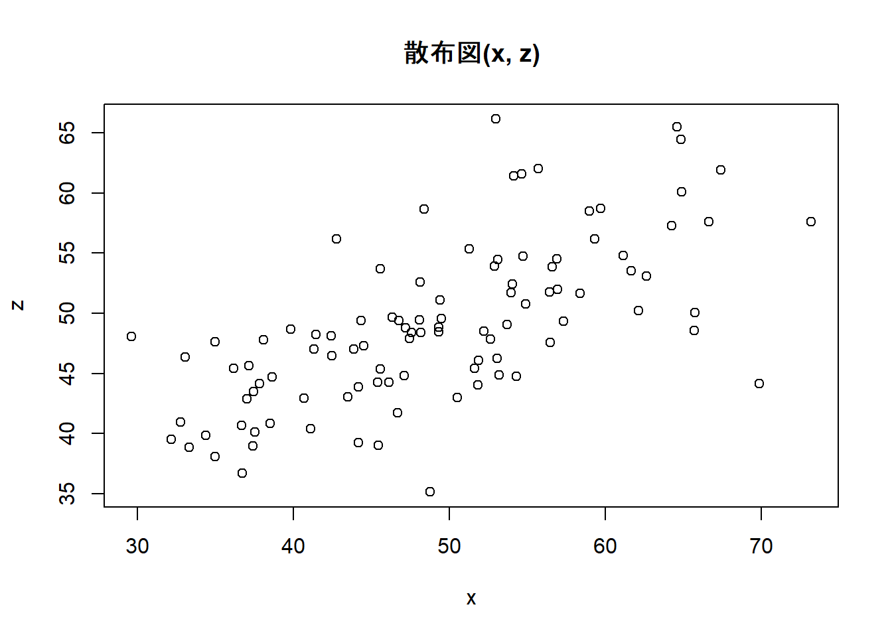
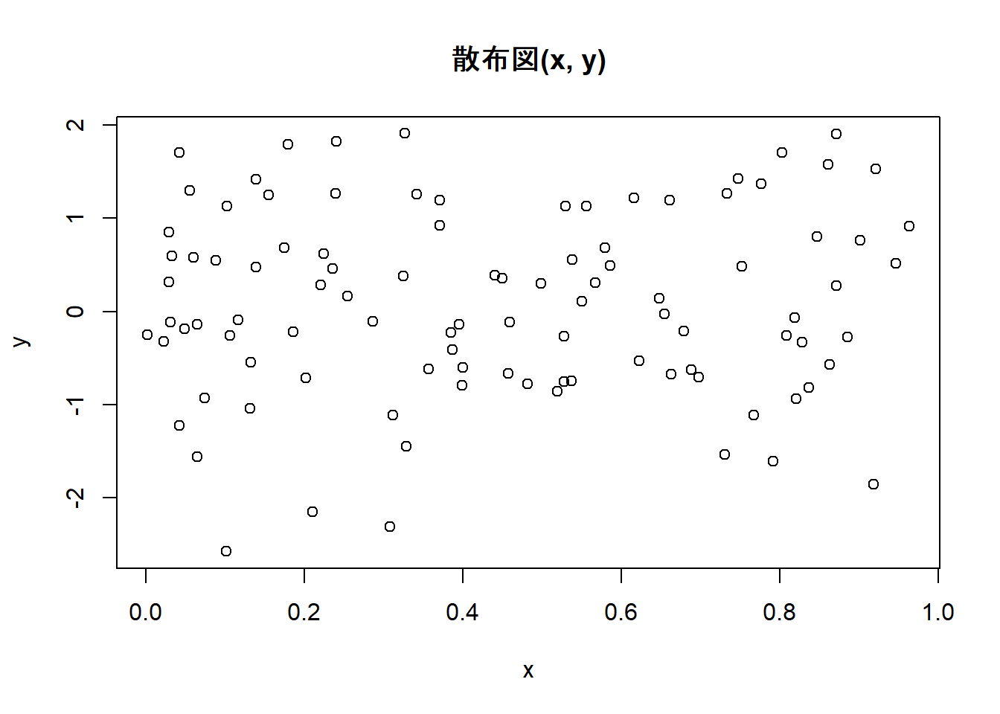

Week2 | Rによる自主勉強会
伊﨑 直志
2023年10月13日
準備
Loading Packages
library(tidyverse)
library(dplyr)
library(gridExtra)##
## 次のパッケージを付け加えます: 'gridExtra'## 以下のオブジェクトは 'package:dplyr' からマスクされています:
##
## combinewindowsFonts(family_sans = windowsFont("Noto Sans JP"))
par(family = "family_sans")
knitr::opts_chunk$set(echo = TRUE)第1章 回帰分析の目的
1.1. 相関と因果
相関関係 correlation：「Xが変化すればYも変化する」
因果関係 causality：「Xを変化させればYも変化する」
疑似相関 spurious correlation
「変数XとYに共通の第3の要因Zが存在することによってXとYに生じる見せかけの相関関係」
e.g. 個人所得の増加 →タバコへの支出増加、医療・健康への支出増加 ＝タバコと健康の疑似相関
- 時間的先行性: 原因となる現象が結果となる現象に時間的に先立って起きている。
- 共変関係（相関関係）: 原因となる現象が変動すると、結果となる現象も変動する。
- 他条件の同一性: 原因となる現象の双方に与える現象は存在しないか、その影響は統制されている。
1.2. 回帰と予測
一次関数 \(y=a+bx\) の形で表現 →最小二乗法（least squares estimation）（図1.1 →図1.6）
回帰直線、回帰式、回帰係数
回帰式の一方の変数に代入してもう一方の変数の値を計算、予測
ある変数Xの値をもとにして、他の変数Yの値を予測 ＝回帰分析
X：説明変数、Y：被説明変数⇒因果解釈ではなく、あくまで予測解釈！
回帰分析 →Xが与えられた時のYの値の予測
1.3. 自然科学のデータと社会科学のデータ
実験の難しさ（費用等コスト、倫理）
⇔自然科学：変数選択の制約・影響少、実験室実験可（変数統制） [従来的説明]
→現在、社会科学における実験多数：実験経済学等 or 自然実験…（後述）
第2章 統計の基礎知識
2.1. 母集団と標本
（有限集団全体）母集団－（抽出）標本
（確率分布）母集団－（観測値）標本 （←本書）
正規分布 normal distribution
正規分布\(N(平均, 分散=標準偏差^2)\)
正規分布（乱数）: rnorm(個数, 平均, 標準偏差)
rnorm(100, 50, 10) ## [1] 42.62869 45.82657 48.37162 84.76891 46.30664 65.75408 60.71977 49.01730
## [9] 44.41640 49.87423 33.20015 57.38771 55.44266 53.81156 41.27052 54.53191
## [17] 71.72676 41.52055 51.33277 56.40947 46.23017 53.88426 60.55683 49.22349
## [25] 57.54691 26.51773 52.38802 52.42689 49.24393 58.13701 50.23028 69.26289
## [33] 48.94158 41.47342 48.78426 43.21696 65.73774 42.76089 38.81635 54.58921
## [41] 46.83851 38.70193 29.96053 56.55300 63.59936 31.26901 40.01519 59.49177
## [49] 59.76532 56.32478 38.65588 60.00876 44.45705 46.55279 58.38367 58.76198
## [57] 58.23639 72.00140 45.61083 31.03729 58.53828 49.41417 13.82020 31.65474
## [65] 53.59730 43.98945 36.08023 50.68809 52.14462 51.96811 46.43903 37.47058
## [73] 63.83325 44.45452 43.07276 48.78685 30.43463 40.48038 36.01007 43.42103
## [81] 52.75233 52.67124 53.74957 65.36503 54.24426 45.57901 52.76452 63.05775
## [89] 45.83975 40.89036 41.66380 62.35806 43.18249 46.75577 62.22182 65.90326
## [97] 45.74388 60.63688 53.92666 58.33814curve(dnorm(x, 50, 10), 0, 100) #正規分布のグラフ描画
pnorm(60, 50, 10) #大きさ１の標本の値が60より小さくなる確率## [1] 0.8413447| 命令 | 説明 | （英略） |
|---|---|---|
rnorm(n, a, b) |
平均a, 標準偏差bの正規分布乱数をn個発生させる。 | random+norm |
dnorm(x, a, b) |
平均a, 標準偏差bの正規分布について, 密度関数の点xにおける値を計算する。 | density+norm |
pnorm(x, a, b) |
平均a, 標準偏差bの正規分布について, 分布関数の点xにおける値を計算する。 | probability+norm |
正規分布グラフ 描画関数
curve(dnorm(x, a, b), min, max) #curve(関数の式,
横軸の最小値, 横軸の最大値)
2.2. 無作為抽出
母集団から標本を抽出（random sampling）
rnorm(100, 50, 10)## [1] 47.54691 54.40177 47.87447 52.55988 60.18081 37.30719 58.24333 48.58804
## [9] 34.99181 37.70265 57.25378 73.02469 34.48891 63.77824 47.65043 48.91234
## [17] 28.54450 51.02623 38.54124 57.66017 51.09686 48.72889 50.06531 50.79189
## [25] 51.83907 60.30203 47.91866 71.58959 46.84467 53.92857 59.36679 54.66044
## [33] 70.25555 40.90175 37.01842 51.34854 43.37177 27.10392 54.87050 49.21437
## [41] 37.86834 33.03600 50.19869 66.31782 60.05595 62.87768 60.03351 54.54099
## [49] 57.26456 42.93326 50.57858 56.40349 53.83081 65.03271 42.69243 36.94393
## [57] 48.00147 46.90155 54.81657 43.25954 62.96733 60.78011 42.75120 45.58509
## [65] 61.90325 54.43722 47.34238 51.19431 52.81069 52.11532 53.56432 32.19863
## [73] 55.23976 44.31704 42.36934 48.62357 55.68643 61.09746 39.88344 47.74671
## [81] 52.60084 58.72964 32.24472 54.73765 58.55323 54.12719 61.78313 63.90972
## [89] 44.40760 53.03851 38.98834 54.55038 42.49521 38.67808 48.71063 57.75597
## [97] 50.88839 58.83840 69.23474 46.60938Z <- rnorm(100, 50, 10)
Z## [1] 52.10658 53.56634 55.62120 51.68817 53.82355 46.19096 45.14076 47.00448
## [9] 44.68291 45.14525 51.25693 45.65671 66.20544 52.83058 54.60235 54.39369
## [17] 54.37636 29.82801 48.67593 54.45071 37.34011 60.55032 52.13518 29.03011
## [25] 53.28527 66.05598 59.01990 37.18287 45.41687 45.13070 49.57900 51.73252
## [33] 39.79233 59.46613 38.98026 47.33045 57.92887 60.25868 56.90506 59.38899
## [41] 41.16539 62.00635 57.93097 58.15790 54.51763 52.55368 60.70732 38.62197
## [49] 55.40861 49.09088 60.99007 26.46165 62.83392 36.14292 52.79902 48.61555
## [57] 39.64449 48.68521 64.87916 70.81631 42.95532 60.39603 40.61127 60.08306
## [65] 45.67506 67.82769 50.36613 45.62913 62.12487 39.80800 47.86210 57.59341
## [73] 44.03459 55.54311 61.96721 48.71087 45.10185 43.04247 36.94729 42.75608
## [81] 89.89347 44.76468 46.70940 51.98715 43.91607 67.85818 43.10600 49.02143
## [89] 64.96285 54.85591 52.85475 50.94946 45.43445 51.50977 56.78342 26.02405
## [97] 53.39329 42.87951 47.60276 62.03441hist(Z) #ヒストグラム
Z[1:10] #最初の10個のデータを抜き出し## [1] 52.10658 53.56634 55.62120 51.68817 53.82355 46.19096 45.14076 47.00448
## [9] 44.68291 45.14525a <- c(5, 10, 100)
Z[a] #5番目,10番目,100番目の位置にある数字を抜き出し## [1] 53.82355 45.14525 62.03441Z[c(5, 10, 100)] #aを使わずに同上の操作## [1] 53.82355 45.14525 62.03441#特定の意味を持つ数値を抽出
max(Z) #最大値## [1] 89.89347which.max(Z) #最大値の位置## [1] 81min(Z) #最小値## [1] 26.02405which.min(Z) #最小値の位置## [1] 96mean(Z) #平均値## [1] 51.01362summary(Z) #基本統計量を一括表示## Min. 1st Qu. Median Mean 3rd Qu. Max.
## 26.02 45.12 51.60 51.01 57.68 89.891:10## [1] 1 2 3 4 5 6 7 8 9 10sample(1:10, 3) #無作為抽出、sample(範囲, 抽出個数)## [1] 1 3 10sample(Z, 5) #sample(標本, 抽出個数)## [1] 42.87951 36.14292 60.70732 46.70940 47.33045sample(Z, 5) #sample(標本, 抽出個数)## [1] 45.65671 26.46165 53.82355 60.25868 48.67593fruits <- c("ミカン", "バナナ", "リンゴ", "レモン", "モモ")
fruits## [1] "ミカン" "バナナ" "リンゴ" "レモン" "モモ"sample(fruits, 1) #fruitsから1個抽出## [1] "レモン"sample(fruits, 2) #fruitsから2個抽出## [1] "レモン" "モモ"sample(fruits, 1) #fruitsから1個抽出## [1] "リンゴ"sample(fruits, 1) #fruitsから1個抽出## [1] "リンゴ"コイン投げ1
coin <- c("Head", "Tail")
#sample(coin, 5) #うまくいかない ∵非復元抽出になっている
sample(coin, 5, replace = TRUE) #復元抽出, replace=TRUE## [1] "Head" "Tail" "Tail" "Tail" "Tail"2.3. 平均と大数の法則
- ①ベクトルrecのi番目の場所rec[i]に
- ②母集団N(50,10^2)から抜き出した大きさ100の標本の平均を格納する
Rにおけるfor ループ（繰返処理）
for (アイテム in シーケンス) {アイテムを用いたオペレーションの指示}
出典: 16 ループと反復処理・リストの操作 | 疫学のための R ハンドブック
mean(Z) #標本平均## [1] 51.01362mean(rnorm(100, 50, 10))## [1] 48.55548mean(rnorm(100, 50, 10)) #Z <- rnorm(100, 50, 10)## [1] 49.32999#より多い試行、抽出1000回、標本の大きさ100
S <- 1000
rec1 <- numeric(S)
for(i in 1:S){
rec1[i]<-mean(rnorm(100, 50, 10))
}
rec1## [1] 50.04000 51.12672 47.51733 52.10082 49.89628 50.29889 49.91738 48.34069
## [9] 49.56604 51.02973 49.28676 49.23567 48.25168 49.70827 50.36591 51.39563
## [17] 50.42164 51.07450 49.02605 49.28156 50.47470 50.56697 48.75004 50.98232
## [25] 48.17323 50.02642 49.35825 50.36349 50.21185 46.90323 51.66810 49.59073
## [33] 51.61554 49.50265 50.72402 49.63888 50.13280 50.56213 49.40547 51.14104
## [41] 51.65815 49.40029 49.09168 51.31175 50.40141 49.93196 48.19472 50.47257
## [49] 50.70806 51.46758 50.47817 50.04562 47.11615 49.39044 48.90510 49.90691
## [57] 50.23420 49.81288 49.59248 49.48281 49.01950 49.98692 48.05169 50.95191
## [65] 48.75385 48.92074 49.45321 49.82885 48.68244 51.69999 50.77386 50.23593
## [73] 48.37435 48.74894 50.54892 50.00373 51.68214 48.61771 50.81822 50.29063
## [81] 48.63304 51.39083 48.91543 50.27640 49.26508 49.25765 49.21305 48.92850
## [89] 48.96648 48.83222 49.20068 48.74442 49.43288 49.56091 50.74381 49.84468
## [97] 50.41530 50.19587 49.08610 50.03096 50.23576 49.64787 49.83986 50.18194
## [105] 49.44734 48.83961 49.87286 51.03107 50.26973 49.76801 48.26422 48.72303
## [113] 49.87742 49.20933 49.45743 50.61470 49.59132 50.08307 49.05575 50.33794
## [121] 50.82814 48.69832 50.80753 48.48721 49.88995 49.38841 48.82133 48.24943
## [129] 50.01666 48.38581 49.64046 50.50904 49.60797 49.07444 50.54825 47.80801
## [137] 49.97735 49.05749 48.82510 48.66535 50.61275 49.90471 52.44099 51.84664
## [145] 50.63210 50.07284 50.73780 48.07921 50.41370 51.33206 50.93969 49.87404
## [153] 50.77470 49.35935 49.72261 50.08437 50.08621 49.56174 49.73010 50.63894
## [161] 50.45825 49.37919 50.00788 49.74535 50.73938 50.97679 48.94575 49.70186
## [169] 52.10889 49.49941 47.35670 48.18265 50.20167 51.29307 50.96360 49.76678
## [177] 49.48004 51.80167 50.76791 49.86904 49.78442 50.76340 48.94264 50.45715
## [185] 50.95020 48.61890 49.62781 49.09351 48.62582 49.21175 49.64501 49.63134
## [193] 50.98494 50.29350 50.65485 49.81583 51.08018 50.22237 49.26313 51.07074
## [201] 49.99377 49.12962 50.55325 48.64821 49.19283 50.42547 50.74372 49.22348
## [209] 52.95986 49.85436 50.03416 50.43780 51.35824 49.21946 50.69832 50.53733
## [217] 50.36833 47.75740 50.90119 48.94423 50.46202 50.84534 50.30107 50.98899
## [225] 50.34948 51.59121 50.12577 47.87838 49.91880 49.84802 48.31048 52.11811
## [233] 49.39331 49.71875 51.94758 51.88959 50.79989 47.86613 50.59128 50.75022
## [241] 48.69433 47.83832 50.33031 50.95292 50.24876 49.64633 50.56561 50.62934
## [249] 51.19061 50.79478 51.44126 49.06815 50.37429 52.05883 51.01851 49.40586
## [257] 49.26651 50.46517 49.81972 51.69793 49.95564 50.20243 51.75177 50.70346
## [265] 49.38503 49.92103 48.28639 51.71045 50.57599 47.30328 50.27308 51.46836
## [273] 46.97195 51.75591 50.47712 51.53577 48.96315 49.88616 49.28607 49.97797
## [281] 51.20538 48.78368 50.06628 50.25110 50.59513 51.18644 48.51858 51.93817
## [289] 49.65497 49.76812 50.75245 50.21245 49.71011 49.03479 50.00338 49.87042
## [297] 49.03999 51.14239 50.48004 50.36172 49.30878 50.14770 48.76839 49.58086
## [305] 46.96134 49.73396 49.86190 51.90859 49.55915 49.35631 51.59548 49.88341
## [313] 52.04867 49.82268 51.19167 50.19097 48.99078 49.47525 49.53202 50.48175
## [321] 50.83389 48.66300 48.87707 50.29337 49.51502 48.95093 51.21790 50.60704
## [329] 49.95599 50.05718 49.91751 48.99135 48.29393 48.54071 49.51286 50.25782
## [337] 49.71875 49.83802 49.88406 51.57786 49.25085 48.78160 49.47598 49.92358
## [345] 49.42111 49.18317 49.18225 49.71323 48.91387 50.96851 47.26963 49.02745
## [353] 51.54362 49.06343 47.93889 50.33779 49.84895 52.65116 51.08968 50.48404
## [361] 49.57651 50.18127 50.74866 50.65033 50.25280 48.76411 49.76538 50.90412
## [369] 48.01513 50.73898 50.04864 49.68996 50.44336 49.41804 49.47989 49.75268
## [377] 50.20783 49.53903 49.37577 50.22155 51.73865 49.60355 48.72719 50.86281
## [385] 49.46147 51.81017 50.31708 50.36877 51.50104 50.18389 48.86707 50.42027
## [393] 49.95456 49.12329 50.31494 51.18017 50.00071 49.18341 50.70073 49.18374
## [401] 51.42869 50.67442 51.12369 49.44194 50.53275 50.79289 49.00426 48.81241
## [409] 50.53312 48.75299 51.15967 51.46764 50.54991 49.59687 49.32836 51.27450
## [417] 50.58426 51.37133 49.85898 51.08821 50.07310 50.51743 50.99411 49.06607
## [425] 50.01819 49.14179 51.08923 50.91062 49.17281 50.56613 50.44542 48.74814
## [433] 51.14039 50.62900 50.64865 50.15258 48.17728 50.74607 50.75811 50.07201
## [441] 51.25159 48.76176 51.07892 49.49137 51.10252 50.57303 49.33389 48.07006
## [449] 51.93463 49.30484 50.24358 49.69324 49.60791 48.30104 50.11242 50.50887
## [457] 51.24782 50.21456 51.87040 52.16515 49.11954 49.43178 50.88962 49.78035
## [465] 49.67891 49.49539 50.30104 50.12892 49.81416 51.13495 49.69112 50.49389
## [473] 48.80644 51.71463 48.78027 50.52480 49.32631 49.89730 50.31676 50.47533
## [481] 51.04255 49.15598 50.29571 50.22062 50.91077 50.19729 49.12197 51.75907
## [489] 49.48944 50.29346 50.83943 51.11765 50.37202 49.62570 49.01811 49.57855
## [497] 49.54047 51.00556 48.83315 50.19557 48.12944 49.98232 50.66333 50.33739
## [505] 50.39103 50.43537 51.08996 51.06910 48.77864 48.88856 50.55363 51.18078
## [513] 48.51782 49.98020 51.74943 50.08491 51.33468 51.03561 49.46683 49.86950
## [521] 48.45596 48.90904 50.06717 49.49174 49.86044 52.43360 49.86559 49.72023
## [529] 49.78359 48.72468 48.21547 50.47004 51.22149 51.40100 51.16033 50.18333
## [537] 51.17562 51.07098 51.17427 49.91856 50.15284 51.07059 49.39484 48.81152
## [545] 51.99066 49.75246 50.61307 50.69849 50.17425 50.79679 49.76403 48.74577
## [553] 50.41637 50.45472 49.88179 49.18053 50.54026 52.22203 50.73699 50.52073
## [561] 50.78933 51.08132 49.64467 50.55453 50.85281 50.71310 50.86242 51.24317
## [569] 51.45372 51.29155 50.75603 49.03176 50.16123 49.09039 51.39090 50.84358
## [577] 50.51769 50.25559 50.94294 49.04140 52.65933 49.81257 49.28200 50.01245
## [585] 50.44845 48.86844 50.65893 50.37496 50.03719 48.57323 50.45544 49.69733
## [593] 52.01999 50.45319 50.74625 51.52490 50.20232 48.36667 49.50290 49.22658
## [601] 49.63159 49.89974 51.01602 48.42900 50.91846 50.18202 50.28668 50.93636
## [609] 49.36827 49.97075 50.96925 49.49434 49.67017 50.53236 48.34973 49.33721
## [617] 49.68788 48.16272 50.13129 50.51898 50.30191 49.42945 49.20795 49.64742
## [625] 49.89079 50.48942 50.17779 50.02909 50.59594 49.38458 48.60839 49.79294
## [633] 51.54077 49.25877 51.13116 48.45830 51.16436 50.60523 48.78261 50.81612
## [641] 50.38399 50.13386 50.50307 51.01382 51.06748 49.88242 48.63492 48.80821
## [649] 51.26278 52.76265 51.17920 49.46879 50.60539 47.43603 50.91729 49.68473
## [657] 49.35517 50.61620 49.75137 49.25258 48.50968 50.84769 51.02086 50.93458
## [665] 50.07554 49.42934 49.39921 50.22864 48.61451 50.14864 49.80954 48.96695
## [673] 51.62019 48.88273 50.79244 50.44546 49.28163 49.90249 51.32253 51.82033
## [681] 50.89328 50.22662 50.39095 50.21080 49.59835 50.05105 50.07523 49.48235
## [689] 49.47351 49.35953 50.49847 50.30406 50.08872 51.87957 48.18282 50.34784
## [697] 49.66441 49.13994 49.22985 49.45389 53.65172 50.06639 49.16796 50.84846
## [705] 49.41661 49.09011 50.80765 49.65086 48.16807 51.24944 49.32624 48.34299
## [713] 50.41814 50.06898 47.71374 49.86992 49.17048 50.77354 49.31801 49.99688
## [721] 50.47950 49.34271 49.42920 48.90537 50.86979 50.70290 50.38741 49.37905
## [729] 48.58796 49.21766 50.53001 49.51619 50.69534 48.90136 48.77230 50.18280
## [737] 50.83108 49.37571 48.84566 50.58562 50.00407 50.06544 49.20472 49.62349
## [745] 50.65818 52.09298 50.21007 52.20557 47.95770 51.15677 49.13166 51.73796
## [753] 49.06220 51.83098 50.73576 49.89894 48.74587 49.75438 50.13007 51.01980
## [761] 49.83992 49.29881 49.90780 48.70231 49.30827 49.77813 49.03260 50.57137
## [769] 50.00598 48.04291 49.58865 48.88763 49.06543 48.89536 50.07267 49.76132
## [777] 48.97618 50.37502 50.31716 49.99264 51.27095 48.79974 50.10318 49.60384
## [785] 51.47138 50.28130 49.98215 49.22274 49.56032 49.75661 49.94573 49.97850
## [793] 50.51702 49.86321 50.44726 50.94679 49.76417 51.15702 49.54681 50.00654
## [801] 50.48276 50.75943 49.68786 50.05053 50.72969 50.78924 50.35150 49.33304
## [809] 49.18854 49.97301 48.75881 49.31928 52.43414 48.85978 49.35023 49.43382
## [817] 49.75389 49.11670 51.78044 50.40036 51.06990 50.39000 50.31039 49.25294
## [825] 49.07154 50.60037 48.80709 50.42131 51.50008 50.31530 49.34513 49.25649
## [833] 50.20991 50.58976 49.14859 49.67377 48.30257 51.31483 49.31007 50.12858
## [841] 50.58826 49.21683 50.11687 50.47274 49.27809 50.11929 50.64433 50.20921
## [849] 50.77478 50.42942 50.69613 50.28995 49.90513 51.20788 46.67505 50.66201
## [857] 50.32732 49.53360 51.43098 49.16071 50.03807 50.34470 49.42333 49.40632
## [865] 50.03790 50.71616 49.97906 50.66533 51.08897 48.43817 50.38624 50.76257
## [873] 49.42869 50.34964 49.14293 48.50644 50.03818 50.39062 49.63196 48.77165
## [881] 48.95236 50.39648 51.14956 50.62282 49.21283 49.45665 50.90395 50.17576
## [889] 49.43802 50.56649 50.14136 49.34095 49.44856 48.38682 49.50013 49.95640
## [897] 47.54538 51.66309 50.23044 49.95072 50.78932 49.61828 51.08520 50.14494
## [905] 50.07218 48.74744 51.31906 49.82237 50.55304 50.76412 50.81553 50.48546
## [913] 50.58826 49.45032 50.49993 51.96319 49.87825 48.62326 50.91734 50.17140
## [921] 49.40595 49.97622 48.50189 50.03935 51.15804 49.03218 48.76455 49.94925
## [929] 51.12904 48.24600 48.16485 50.26289 50.55198 48.85817 48.38140 50.56317
## [937] 51.17090 49.19500 48.84391 49.38617 50.42587 51.50108 50.09272 51.00266
## [945] 50.71659 50.05902 50.26542 48.69027 51.61744 50.83863 48.95014 50.80612
## [953] 50.81841 49.94234 49.37722 50.45965 49.68555 51.15717 49.07243 51.62177
## [961] 50.15779 50.58906 50.81921 49.17184 48.28886 52.42043 49.40765 49.72132
## [969] 51.72301 50.67189 49.01582 50.26144 50.69381 48.59311 49.98437 49.05511
## [977] 49.09089 51.81219 50.25965 49.73341 49.14236 51.05957 49.41094 50.54954
## [985] 50.32341 50.34514 49.66183 51.34456 51.34026 49.09865 51.12355 50.80387
## [993] 50.00000 50.08158 49.97399 50.44006 50.71447 49.13624 50.65270 49.42490hist(rec1, main = "n = 100") #main = "n = 100", ラベル
summary(rec1)## Min. 1st Qu. Median Mean 3rd Qu. Max.
## 46.68 49.35 50.04 50.02 50.67 53.65rec2 <- numeric(S)
for(i in 1:S){
rec2[i] <- mean(rnorm(10000, 50, 10))
}
rec2## [1] 49.92954 50.14352 50.04900 50.12919 50.11923 49.91099 49.94963 49.99672
## [9] 49.72646 49.97097 50.16249 50.11879 49.98274 49.86568 50.04807 49.88238
## [17] 50.09031 50.04093 50.16561 50.13102 49.88434 50.12415 50.03510 50.05557
## [25] 50.08016 50.10532 49.91620 50.14259 49.90281 50.20708 49.86537 49.96319
## [33] 50.02083 50.10766 49.99569 50.12272 49.97372 50.05309 49.93102 49.97066
## [41] 50.09890 49.95300 49.94081 49.88650 49.87939 49.88580 49.98243 49.95779
## [49] 50.10248 50.09304 50.04839 50.03750 49.90661 49.78250 50.08872 49.89040
## [57] 49.90081 50.04374 50.00217 50.00902 49.89027 50.22705 50.04102 49.90665
## [65] 49.96892 49.92028 50.02125 49.97130 49.91394 50.01720 50.28292 49.89681
## [73] 50.03495 50.13264 49.96310 50.17614 50.04637 50.15503 50.08822 50.01931
## [81] 50.03091 50.06250 49.93746 49.94846 49.97335 49.89698 49.94861 50.35023
## [89] 50.06061 50.04117 49.91284 50.04839 50.00887 49.96442 50.11193 49.92676
## [97] 49.96071 49.87987 49.91240 49.97382 50.10167 50.01441 50.17830 49.99459
## [105] 49.95905 50.03754 50.10486 50.11862 50.04638 49.98807 50.19286 49.76423
## [113] 49.96389 49.84314 49.94903 49.87665 49.97650 49.98432 50.01838 49.83371
## [121] 49.92267 50.07021 50.03279 50.03818 50.07367 49.92344 49.87616 50.11327
## [129] 50.14968 50.02478 49.99680 50.01032 49.98311 50.00672 50.00631 50.02349
## [137] 50.00524 50.06686 50.07727 50.05257 49.90820 50.04828 50.10575 49.99189
## [145] 49.92226 50.07495 50.14621 49.88489 50.10074 49.77578 50.10627 50.05760
## [153] 50.12764 49.99398 49.97974 49.95971 50.00756 49.91813 49.96562 49.97958
## [161] 50.12937 49.97736 50.10477 50.04339 50.04788 49.99168 50.01423 50.11862
## [169] 50.01808 49.96590 50.03506 49.98754 49.90461 50.05480 50.08699 49.97505
## [177] 50.11025 49.91908 50.04029 50.09958 50.02964 50.03406 50.13803 50.05988
## [185] 49.92297 49.91965 50.09548 49.88878 50.01519 49.92126 50.15533 50.01587
## [193] 49.98608 50.01311 50.00213 49.87983 50.08120 50.02078 50.05119 50.05225
## [201] 50.00676 50.17176 50.12633 49.98421 50.09710 50.16418 49.94142 50.05768
## [209] 49.79449 49.89890 49.91602 50.00559 50.02413 49.87889 49.87077 50.01725
## [217] 50.03543 49.92686 50.06339 50.09038 49.90690 50.20429 50.13165 49.74410
## [225] 49.99381 50.04730 50.12345 49.85222 50.03371 50.08730 49.89894 49.85822
## [233] 50.03484 49.99602 49.96615 49.77788 50.05427 49.91057 49.97236 49.99967
## [241] 49.98111 50.25387 49.66767 50.05130 49.88100 50.06210 50.08695 50.03880
## [249] 49.99156 49.88850 49.91506 50.11498 49.98965 50.00283 50.08088 49.97111
## [257] 50.16005 49.98691 49.84151 49.94553 50.02825 50.23877 50.14816 50.02774
## [265] 49.94328 49.82421 50.15653 50.07219 49.95548 50.11796 49.99212 49.99102
## [273] 50.16165 50.08141 50.05976 49.96701 49.97534 49.89746 49.99597 49.78539
## [281] 49.97614 50.05202 50.17064 50.14409 49.90073 50.02938 49.93196 49.95744
## [289] 49.96541 50.07570 49.98386 49.86079 49.96256 49.95958 49.99365 49.99813
## [297] 50.10301 49.94101 50.01135 50.19403 49.76631 50.01266 49.88600 50.14890
## [305] 49.92721 49.95063 50.03219 49.94931 49.99924 50.09318 49.90413 49.93396
## [313] 49.98158 50.04505 50.04207 50.04661 49.94573 49.89735 50.16393 49.90760
## [321] 50.18658 50.05087 49.94099 50.18574 49.99212 49.91990 50.14791 50.21491
## [329] 50.02886 49.99586 49.93789 50.20351 50.05273 49.94053 49.86806 50.00889
## [337] 50.18538 50.14942 49.95186 49.95192 50.04564 49.98232 49.94938 50.03842
## [345] 50.28222 49.85555 49.87906 50.11568 49.99480 49.92884 50.10562 50.18648
## [353] 49.94786 49.99076 49.88396 50.01207 49.96427 49.85970 50.22223 49.94269
## [361] 49.98207 50.12688 49.88124 49.96791 49.95389 50.01766 49.94855 49.84259
## [369] 49.99893 50.10116 49.95096 50.03836 50.03951 49.95878 49.85429 50.06495
## [377] 49.99340 49.88189 49.92603 50.00645 49.95430 49.88182 50.08175 50.01096
## [385] 49.91107 49.90577 49.91845 49.92310 50.01681 50.23286 49.77729 49.92048
## [393] 49.99008 50.05707 50.12199 49.92377 49.88351 49.96869 50.24585 49.86259
## [401] 50.06305 50.07597 50.20145 49.92872 49.82742 50.06666 50.09165 49.91464
## [409] 50.13608 50.11806 49.98700 50.11994 50.15496 50.08305 49.89748 49.94408
## [417] 49.95525 50.00974 50.06428 49.98896 50.11059 49.99887 50.04713 49.95816
## [425] 50.01396 50.05011 49.88607 50.00506 50.04671 49.81353 50.05862 49.81227
## [433] 49.92498 49.97982 50.11119 50.01858 50.12380 49.89039 49.92671 50.08832
## [441] 49.88703 50.05785 49.97035 50.08677 50.05438 49.98511 50.00937 50.02065
## [449] 49.93593 50.19490 49.96019 50.02048 50.06184 49.74077 49.75039 49.92442
## [457] 50.08005 49.75437 49.88369 49.92136 49.99569 49.87044 50.01576 49.97107
## [465] 49.93660 50.08723 49.89781 50.11040 50.15400 49.86847 50.08727 50.10381
## [473] 50.04231 49.89650 50.00978 50.11672 49.87416 49.94618 49.96271 50.08706
## [481] 50.06629 50.12741 50.14679 50.05566 50.05849 49.95880 50.07012 50.14251
## [489] 50.06287 49.89977 49.82938 50.24936 49.93426 50.03384 49.96389 49.80580
## [497] 50.00905 50.02010 50.05279 49.98734 50.07795 50.04751 49.99219 49.88418
## [505] 50.03963 49.98736 50.03453 49.81233 49.96222 50.10691 49.97925 49.88267
## [513] 49.82731 50.06017 50.17333 50.00926 49.95106 50.08424 50.01277 50.01167
## [521] 49.94797 50.01869 49.86962 50.12261 50.20623 49.96185 49.98232 50.24657
## [529] 49.90886 49.88004 49.99263 49.89413 50.08682 49.78054 49.87275 49.81106
## [537] 49.85160 49.85892 49.88830 50.03411 50.21176 49.95188 49.96352 50.09179
## [545] 50.08256 50.06359 49.94470 50.01739 49.99859 50.10577 49.88448 49.70493
## [553] 49.99555 49.98314 49.81128 50.09816 49.92317 50.10840 49.93530 50.23381
## [561] 50.07248 49.85818 50.23631 50.15647 49.95642 49.90083 49.77066 49.95468
## [569] 49.90110 49.93896 50.34519 50.06924 49.91273 50.08124 49.90004 49.90770
## [577] 50.02798 49.98128 50.06510 49.95440 49.96908 50.08649 50.06893 49.97485
## [585] 49.89931 50.10339 49.77035 49.90839 50.05806 50.17049 49.95699 50.09788
## [593] 50.01792 49.97905 49.81276 49.90944 49.99775 49.77454 49.95156 49.96858
## [601] 50.05251 49.99532 49.87565 50.09328 50.08037 49.87204 49.89521 49.95757
## [609] 49.94053 49.89361 50.13769 50.02956 50.02570 50.12951 49.93261 49.96418
## [617] 49.89533 50.06424 49.95566 50.02523 49.98920 50.01107 49.86686 50.01497
## [625] 49.95387 50.07954 49.85533 50.02353 49.80883 49.83665 49.79467 49.94734
## [633] 49.93535 50.07713 49.89487 49.95246 49.96824 50.06494 50.07195 49.88440
## [641] 49.96455 50.29267 50.15609 50.17862 50.10726 49.97591 50.02665 50.17801
## [649] 49.95446 49.93254 49.91836 49.92736 50.05534 49.77205 49.90226 49.98394
## [657] 49.90691 49.95171 49.96098 49.98926 49.90596 49.93846 50.00431 49.99924
## [665] 49.98761 50.00016 49.97794 50.15465 50.09861 50.00113 49.84480 49.77199
## [673] 49.99163 50.04383 50.04166 49.89321 50.05266 49.99854 50.11220 50.01477
## [681] 50.06306 50.02433 49.96844 49.77476 49.92211 49.91881 49.97262 50.00262
## [689] 50.10522 49.95925 49.88423 50.10917 50.08073 49.92582 50.00136 50.06731
## [697] 50.13831 50.04135 50.06656 50.05295 49.87019 49.96668 50.04181 50.09135
## [705] 49.94178 49.94120 49.73454 49.81728 50.24161 50.00401 49.71381 50.15022
## [713] 50.09140 50.09502 49.93900 50.00513 50.09946 49.89850 49.93194 49.94825
## [721] 50.01113 50.10420 49.94534 49.99739 50.03891 50.11750 49.83654 50.01803
## [729] 50.05522 49.96315 49.99900 49.83881 50.31414 50.00182 49.99940 49.99834
## [737] 50.01707 49.98058 49.88617 50.12197 50.17134 50.00617 49.81537 49.89024
## [745] 50.10934 49.79682 50.03196 50.13739 49.98559 49.96544 49.96696 49.90020
## [753] 49.94991 49.95527 50.01294 50.04607 50.10542 50.02555 49.91511 49.97814
## [761] 49.76687 50.04354 50.07807 49.87194 49.94250 49.99655 50.05462 49.92215
## [769] 50.16825 49.97282 50.15806 49.92481 50.03806 50.06866 49.98703 50.11557
## [777] 50.06184 49.93077 49.90355 49.93299 49.92389 49.95865 49.99415 49.82308
## [785] 49.92643 49.97360 50.06785 50.12684 50.12626 49.93563 49.95814 49.85266
## [793] 50.08576 50.07369 50.01775 50.05708 49.82665 49.98423 49.97129 50.11931
## [801] 50.14629 50.03526 50.00360 49.91694 49.95726 50.01722 49.99107 50.02576
## [809] 50.09200 49.90815 50.07454 49.99890 50.23076 50.02175 50.04622 49.86465
## [817] 49.87167 50.08656 49.96379 49.99183 50.07403 50.14273 49.91487 50.03719
## [825] 50.13731 49.97295 50.06493 50.06769 49.99030 49.94058 49.77716 49.86501
## [833] 49.93051 50.10138 49.91455 49.90498 50.02535 50.05616 49.75762 50.07258
## [841] 49.85205 50.01703 49.86274 49.93110 49.81839 50.10129 50.14319 49.95674
## [849] 50.04207 50.11950 50.05779 50.03061 49.78164 50.13764 50.02398 49.92015
## [857] 50.01744 50.00109 49.91548 49.94260 50.04457 49.85133 49.83058 49.97666
## [865] 50.11222 50.06254 50.02392 50.10289 49.96541 50.01053 50.06010 50.20084
## [873] 50.02182 49.93405 49.97563 50.20013 50.11765 50.09437 49.90397 49.83115
## [881] 50.04011 49.94601 49.65393 49.99582 49.95528 49.98540 49.94766 49.92653
## [889] 50.03572 49.99248 50.01377 50.15620 50.04513 50.01333 49.94637 49.96198
## [897] 50.00435 50.11525 50.20229 50.09114 50.14876 50.10482 49.95891 49.92316
## [905] 49.94202 50.00783 49.96491 50.08141 49.98347 49.92309 50.00014 49.97997
## [913] 50.21272 50.00154 50.09197 50.02206 50.11233 50.26319 50.26335 49.95862
## [921] 49.85074 49.91835 49.96516 49.93021 50.22992 49.90095 49.94384 50.12673
## [929] 50.08412 49.83284 49.84738 49.97182 49.96727 49.99319 50.00423 50.02476
## [937] 49.84951 49.90857 50.17397 49.78172 49.94837 50.01260 49.94414 50.12340
## [945] 50.13501 50.05369 49.96345 49.83247 49.74119 49.84299 49.93664 49.80794
## [953] 50.13897 49.91757 49.87799 50.16280 49.99348 50.04089 49.86052 50.02569
## [961] 50.10310 49.92697 50.08082 50.05561 50.13615 50.10358 50.05232 50.02494
## [969] 50.05838 50.01472 49.84597 50.11057 49.98528 50.01265 49.91452 49.91320
## [977] 49.73491 50.02799 50.28861 50.03974 50.02864 50.09928 50.01127 49.93719
## [985] 50.00281 50.01787 50.18694 50.08137 50.11078 49.96488 49.96534 50.08776
## [993] 50.07430 49.92443 49.85143 50.11626 50.05336 49.89073 50.04280 49.90609hist(rec2, main = "n = 10000") #main = "n = 100", ラベル
summary(rec2)## Min. 1st Qu. Median Mean 3rd Qu. Max.
## 49.65 49.93 50.00 50.00 50.07 50.35【大数の法則】
母集団から無作為に抜き出された標本の平均値は、標本の大きさが大きいほど、母集団平均に近い値をとる。
サイコロ：母集団平均3.5
\(1*1/6+2*1/6+3*1/6+4*1/6+5*1/6+6*1/6=3.5\)
⇒大数の法則をスクリプトで確認
sample(1:6, 10, replace = TRUE) #サイコロを10回振る試行## [1] 6 6 2 5 1 2 1 4 5 5mean(sample(1:6, 1000, replace = TRUE)) #サイコロを1000回振った結果の目の平均値, 3.5に近似## [1] 3.567#サイコロ10回の標本平均×1000
S <- 1000
rec2 <- numeric(S)
for(i in 1:S){
rec2[i] <- mean(sample(1:6, 10, replace = TRUE))} #サイコロ10回の標本平均×1000
summary(rec2)## Min. 1st Qu. Median Mean 3rd Qu. Max.
## 1.80 3.20 3.50 3.52 3.90 5.00#サイコロ1000回の標本平均×1000
S <- 1000
rec3 <- numeric(S)
for(i in 1:S){
rec3[i]<-mean(sample(1:6, 1000, replace = TRUE))} #サイコロ1000回の標本平均×1000
summary(rec3)## Min. 1st Qu. Median Mean 3rd Qu. Max.
## 3.325 3.465 3.500 3.501 3.535 3.675#サイコロ10000回の標本平均×1000
S <- 1000
rec4 <- numeric(S)
for(i in 1:S){
rec4[i] <- mean(sample(1:6, 10000, replace = TRUE))} #サイコロ1000回の標本平均×10000
summary(rec4)## Min. 1st Qu. Median Mean 3rd Qu. Max.
## 3.451 3.489 3.500 3.500 3.511 3.5492.4. 分散と標準偏差
| 命令 | 説明 |
|---|---|
var() |
分散 |
sd() |
標準偏差 |
標本平均 →標本のちらばり
分散 variance 標本が平均値を中心にどれだけ散らばっているかを表す指標
標準偏差 standard deviaton 分散の平方根、標本が平均値を中心にどれだけ散らばっているかを表す指標（同上）
分散は、計算過程において２乗しているので観測データの単位と異なります。例えば観測データの単位がg（グラム）である場合、分散の単位はg2になります。そこで、分散の平方根である標準偏差を求めることによって、観測データとの単位を揃えることが出来ます。そうすることで、分散よりも扱いやすい値となります。
出典: 標準偏差の意味と求め方 | AVILEN AI Trend
#母集団N(50, 10^2)から大きさ1000の標本を無作為に抽出
x <- rnorm(1000, 50, 10)
var(x) #分散## [1] 93.42545sd(x) #標準偏差 #10に近似## [1] 9.665684#分散・標準偏差における大数の法則
#n = 1000
S <- 1000; n <- 1000
rec <- numeric(S)
for(i in 1:S){
rec[i]<-sd(rnorm(n, 50, 10))}
summary(rec) #標準偏差10に近似## Min. 1st Qu. Median Mean 3rd Qu. Max.
## 9.363 9.835 9.998 9.996 10.148 10.954#より大きいサイズで確認
#n = 10000
S <- 10000; n <- 10000
rec <- numeric(S)
for(i in 1:S){
rec[i]<-sd(rnorm(n, 50, 10))}
summary(rec) #より10に近似＝大数の法則## Min. 1st Qu. Median Mean 3rd Qu. Max.
## 9.756 9.952 10.000 10.001 10.049 10.2612.5. 相関係数と共分散
| 命令 | 説明 |
|---|---|
plot() |
散布図 |
cor() |
相関係数 |
cov() |
共分散 |
x <- rnorm(100, 50, 10)
y <- rnorm(100, 50, 10)
plot(x, y, main = "散布図(x, y)") #x,yの散布図
#xと関係のあるzを追加
z <- (x+y)/2
plot(x, z, main = "散布図(x,z)") #x,zの散布図
共分散: 2変数の関係の強さを表す指標の一つ。
〈手順〉
- それぞれの変数の平均値を求める
- それぞれの変数の偏差（数値 － 平均値）を求める
- 偏差の積の平均値（＝共分散）を計算する
ただし、データの単位の影響を受けるので値の大きさで単純に比較できない（データスケールに応じて変化してしまい、共分散の数値だけを見て関係性を判断することは難しい）
⇒ 正規化・標準化の必要＝相関係数
相関係数: 2つの確率変数間の線形関係の強さをはかる指標、
-1以上+1以下の値を取り、1に近づくほど正の相関、-1に近づくほど負の相関
x <- rnorm(100, 50, 10)
y <- rnorm(100, 50, 10)
plot(x, y, main = "散布図(x, y)") #x, yの散布図
z <- (x+y)/2 #xと関係のあるzを追加
plot(x, z, main = "散布図(x,z)") #x, zの散布図
相関係数
cor(x, y)## [1] -0.0845481cor(x, z)## [1] 0.7273958共分散
cov(x, y)## [1] -8.410323cov(x, z)## [1] 52.53268おまけ
x <- rnorm(100, 50, 10)
y <- rnorm(100, 50, 10)
par(family="family_sans")
plot(x, y, main = "散布図(x, y)") #x, yの散布図
z <- (x+y)/2 #xと関係のあるzを追加
plot(x, z, main = "散布図(x, z)") #x,zの散布図
library(ggplot2)
ggplot() +
geom_point(aes(x, y))+
labs(title="散布図(x, y)") +
theme_grey(base_family = "family_sans") +
theme(plot.title = element_text(hjust = 0.5))
ggplot() +
geom_point(aes(x, z)) +
labs(title="散布図(x, z)") +
theme_grey(base_family = "family_sans") +
theme(plot.title = element_text(hjust = 0.5))
ggplot() +
geom_point(aes(x, y)) +
labs(title="散布図(x, y)") +
theme_bw(base_family = "family_sans") +
theme(plot.title = element_text(hjust = 0.5))
ggplot() +
geom_point(aes(x, z)) +
labs(title = "散布図(x, z)") +
theme_bw(base_family = "family_sans") +
theme(plot.title = element_text(hjust = 0.5))
練習問題
問題2.1.
#2.1.1.
runif(100)## [1] 0.29422670 0.23059576 0.98366975 0.08236896 0.84666438 0.04409679
## [7] 0.57787325 0.01080883 0.88808989 0.75037459 0.82043240 0.89970572
## [13] 0.59524750 0.24062787 0.44201278 0.91544460 0.80458571 0.19841144
## [19] 0.61911480 0.90119680 0.89198502 0.43925886 0.92576998 0.93276016
## [25] 0.79046665 0.02625399 0.08963205 0.16025728 0.98069527 0.34339677
## [31] 0.72770624 0.97646771 0.39934248 0.73907545 0.62299537 0.35804751
## [37] 0.47606765 0.26064795 0.68450191 0.75211705 0.43722813 0.52298823
## [43] 0.15032009 0.73280767 0.95156167 0.63050996 0.73507733 0.07919981
## [49] 0.52679542 0.68480166 0.59776579 0.46287439 0.50344668 0.86167401
## [55] 0.35039394 0.63570314 0.92251913 0.89461940 0.53916038 0.46858633
## [61] 0.94126952 0.04224100 0.90283142 0.30691061 0.78853298 0.52716241
## [67] 0.27492147 0.20708061 0.82816075 0.84325574 0.08790250 0.75693084
## [73] 0.42736438 0.60821538 0.84018880 0.70497727 0.92490068 0.76290597
## [79] 0.34563294 0.26799060 0.32281609 0.27822316 0.27703990 0.94105530
## [85] 0.49232464 0.10102621 0.45912914 0.27359262 0.29727616 0.66984893
## [91] 0.06037302 0.26243688 0.19734882 0.92450188 0.16797707 0.69240258
## [97] 0.08270360 0.46953293 0.13755788 0.95917883#2.1.2.
P <- runif(100)
mean(P) #平均## [1] 0.494454var(P) #分散## [1] 0.09636563sd(P) #標準偏差## [1] 0.3104281#2.1.3.
S <- 1000; n = 100
recP <- numeric(S)
for(i in 1:S){
recP[i] <- mean(P)}
summary(recP)## Min. 1st Qu. Median Mean 3rd Qu. Max.
## 0.4945 0.4945 0.4945 0.4945 0.4945 0.4945#Re
x <- runif(100)
#2.1.2.
mean(x)## [1] 0.5203714var(x)## [1] 0.07690746sd(x)## [1] 0.2773219#2.1.3.
S <- 1000; n <- 1000
rec <- numeric(S)
for(i in 1:S){
rec[i] <- mean(runif(n))}
summary(rec)## Min. 1st Qu. Median Mean 3rd Qu. Max.
## 0.4724 0.4939 0.5003 0.5000 0.5065 0.5325問題2.2.
x <- runif(100)
y <- rnorm(100, 0, 1)
z <- 1.3*x-0.7*y
#2.2.1.
plot(x, y, main = "散布図(x, y)")
plot(x, z, main = "散布図(x, z)")
plot(y, z, main = "散布図(y, z)")
cor(x, y)## [1] 0.08780227cor(x, z)## [1] 0.3965638cor(y, z)## [1] -0.8796426#2.2.2.
x <- runif(n)
y <- rnorm(n, 0, 1)
z <- 1.3*x-0.7*y
n = 10000
cor(x, y)## [1] -0.07563104cor(x, z)## [1] 0.5210697cor(y, z)## [1] -0.8904786par(mfrow = c(1,3))
plot(x, y, main = "散布図(x, y)")
plot(x, z, main = "散布図(x, z)")
plot(y, z, main = "散布図(y, z)")
w <- cbind(x, y, z)
cor(w)## x y z
## x 1.00000000 -0.07563104 0.5210697
## y -0.07563104 1.00000000 -0.8904786
## z 0.52106971 -0.89047859 1.0000000#おまけ
library(ggplot2)
x <- runif(100)
y <- rnorm(100, 0, 1)
z <- 1.3*x-0.7*y
g1 <- ggplot() +
geom_point(aes(x, y)) +
labs(title = "散布図(x, y)") +
theme_bw(base_family = "family_sans") +
theme(plot.title = element_text(hjust = 0.5))
g2 <- ggplot() +
geom_point(aes(x, z)) +
labs(title = "散布図(x, z)") +
theme_bw(base_family = "family_sans") +
theme(plot.title = element_text(hjust = 0.5))
g3 <- ggplot() +
geom_point(aes(y, z)) +
labs(title = "散布図(y, z)") +
theme_bw(base_family = "family_sans") +
theme(plot.title = element_text(hjust = 0.5))
grid.arrange(g1, g2, g3, ncol = 3)
筒井淳也『数字のセンスを磨く データの読み方・活かし方』（2023年, 光文社）の第4章を参照のこと。↩︎